인터넷정보관리사-2급 (2017-03-11 기출문제)
1과목: 인터넷의 이해
1. 다음 중 인터넷의 기본적인 개념에 대한 설명으로 가장 거리가 먼 것은?
- 다양한 컴퓨터 네트워크들이 하나의 망으로 이루어진 네트워크의 집합체이다.
- 효시는 군사적인 목적으로 개발된 ARPANET 이다.
- 인터넷에 대한 원칙과 통제 및 관리를 전문 기관에서 하고 있다.
- 다양한 운영체제에서 접속할 수 있다.
(정답률: 73%)

2. 다음 중 국제 인터넷 관련 기구가 아닌 것은?
- ICANN
- IANA
- EFF
- NIS
(정답률: 55%)
3. 다음 중 최상위 도메인이 아닌 것은?
- kg
- fr
- int
- com
(정답률: 56%)
4. 다음 중 인터넷 기술의 발전 순서가 바르게 나열된 것은?
- ARPANET – TCP/IP – WWW - DNS
- ARPANET – TCP/IP – DNS - WWW
- ARPANET – DNS – TCP/IP - WWW
- TCP/IP – DNS – WWW – ARPANET
(정답률: 80%)
5. 다음 중 IPv6 주소로 할당되는 유형과 가장 거리가 먼 것은?
- 애니캐스트
- 유니캐스트
- 브로드캐스트
- 멀티캐스트
(정답률: 76%)
6. 다음 중 IPv6의 특징에 대한 설명으로 가장 거리가 먼 것은?
- 128비트 주소길이를 갖는다.
- 주소할당 방식은 클래스 단위의 비순차적 할당을 한다.
- 헤더크기는 가변적이다.
- 품질관리를 위해 QoS를 제공한다.
(정답률: 58%)
7. OSI 7계층 중 다음 설명에 해당하는 계층은?
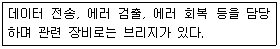
- 데이터링크 계층
- 네트워크 계층
- 전송 계층
- 물리 계층
(정답률: 66%)
8. 다음 중 전자우편 관련 프로토콜이 아닌 것은?
- SMTP
- IMAP
- SNMP
- MIME
(정답률: 60%)
9. 다음 중 클라우드 컴퓨팅의 서비스 유형과 가장 거리가 먼 것은?
- IaaS
- SaaS
- PaaS
- CaaS
(정답률: 69%)
10. 다음 중 클라우드 컴퓨팅 관련 기술과 가장 거리가 먼 것은?
- 가상화 기술
- 디지털 포렌식
- 오픈 인터페이스
- 서비스 프로비저닝
(정답률: 57%)
11. 다음에서 설명하는 클라우드 컴퓨팅 솔루션으로 알맞은 것은?
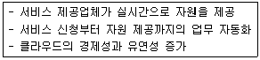
- 가상화 기술
- 서비스 프로비저닝
- 자원 유틸리티
- 다중 공유모델
(정답률: 63%)
12. 다음 중 소셜 미디어의 사용목적으로 가장 거리가 먼 것은?
- 새로운 대중에게 새로운 뉴스를 제공하기 위해
- 뉴스에 의견을 덧붙여 토론을 시도하기 위해
- 공개적으로 자신의 동의를 표시하기 위해
- 자신의 존재를 감추고 타인의 의견을 확인하기 위해
(정답률: 69%)
13. 다음에서 설명하는 소셜 미디어의 특징은?
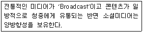
- 대화
- 참여
- 커뮤니티
- 연결
(정답률: 50%)
14. 다음 중 폐쇄형 소셜 네트워크 서비스(SNS)에 해당하지 않는 것은?
- 카카오그룹
- 밴드
- 페이스북
- 비트윈
(정답률: 63%)
15. 다음에서 설명하는 용어로 알맞은 것은?
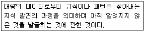
- 디지털 포렌식
- 빅데이터
- 모바일 가상화
- 데이터마이닝
(정답률: 64%)
16. 기업 및 기관 내부에서 클라우드 서비스 환경을 구성하고 제한적으로 서비스를 제공하는 클라우드 서비스 형태는?
- 프라이빗 클라우드
- 퍼블릭 클라우드
- 커뮤니티 클라우드
- 하이브리드 클라우드
(정답률: 65%)
17. 다음 중 OSI 7계층과 그에 해당하는 프로토콜이 잘못 짝지어진 것은?(오류 신고가 접수된 문제입니다. 반드시 정답과 해설을 확인하시기 바랍니다.)
- 물리계층 – Ethernet, Token Bus
- 네트워크계층 – ICMP/IGMP
- 전송계층 – TCP, FTP
- 표현계층 – HTTP, FTP, SMTP
(정답률: 50%)
18. 다음에서 설명하는 개인정보의 유형은 무엇인가?
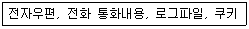
- 법적정보
- 통신정보
- 조직정보
- 위치정보
(정답률: 79%)
19. 저작권법에서 저작물의 원본 또는 그 복제물을 공중에게 대가를 받거나 받지 아니하고 양도 또는 대여하는 것을 의미하는 용어는?
- 발행
- 배포
- 복제
- 편집물
(정답률: 76%)
20. 다음 중 저작권법에서 보호받지 못하는 저작물이 아닌 것은?
- 국가 또는 지방자치단체의 고시, 공고, 훈령 그 밖에 이와 유사한 것
- 헌법, 법률, 명령, 조례, 규칙
- 신문, 전화번호부 등과 같이 저자의 창작물과 상관없이 선택과 배열로 이루어진 편집물
- 사실의 전달에 불과한 시사보도
(정답률: 52%)
21. 전자서명법에서 공인인증서에 포함되어야 하는 사항이 아닌 것은?
- 가입자가 제3자를 위한 대리권을 갖는 경우 또는 직업상 자격 등의 표시를 요청한 경우 이에 관한 사항
- 가입자의 전자서명검증정보를 위한 인감정보
- 인증서의 이용범위 또는 용도를 제한하는 경우 이에 관한 사항
- 가입자와 공인인증기관이 이용하는 전자서명 방식
(정답률: 47%)
22. 개인정보보호법에 관한 설명으로 가장 거리가 먼 것은?
- 컴퓨터 등에 처리되는 정보 외 동사무소 민원신청서류 등 종이문서에 기록된 개인 정보는 보호대상에 포함되지 않는다.
- 2011년 3월 29일 공포되었다.
- 당사자의 동의 없는 개인정보의 수집 및 활용하거나 제3자에게 제공하는 것을 금지한다.
- 2011년 9월 30일부터 전면 시행되었다.
(정답률: 64%)
23. 다음 중 저작권법의 보호기간에 대한 설명으로 가장 거리가 먼 것은?
- 저작재산권은 보호기간의 원칙에 따라 저작권자가 생존하는 동안만 70년간 존속된다.
- 업무상 저작물의 저작재산권은 창작한때부터 50년 이내에 공표되지 아니한 경우 창작한때부터 70년간 존속한다.
- 저작인접권은 방송의 경우 50년간 존속한다.
- DB제작자의 권리는 DB의 제작을 완료한 때부터 발생하며, 그 다음해부터 기산하여 5년간 존속한다.
(정답률: 56%)
24. 다음에서 설명하는 주기억 장치는?
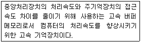
- 캐시메모리(Cache Memory)
- 플래시 메모리(Flash Memory)
- 램(RAM)
- 롬(ROM)
(정답률: 67%)
25. 다음 중 바이러스의 종류가 아닌 것은?
- 트로이 목마
- 스파이웨어
- 멀웨어
- 셰어웨어
(정답률: 67%)
26. 인터넷을 연결할 때 필요한 장비로서 송신 정보에 담긴 수신처의 주소를 읽고 경로를 배정하여 다른 통신망으로 전송하는 장치는?
- 라우터
- 리피터
- 브리지
- 게이트웨이
(정답률: 61%)
27. 다음 중 정보통신망의 용어와 그 의미가 잘못 짝지어진 것은?
- LAN – 근거리 통신망
- MAN – 종합정보 통신망
- WAN – 광역 통신망
- VAN – 부가가치 통신망
(정답률: 69%)
28. 다음 중 웹의 MIME 타입과 설명으로 잘못된 것은?
- text/html – 일반적인 HTML문서
- application/postscript - *.ps, *.ai, *.eps 확장자를 가진 파일
- video/mpeg – 동영상 파일로 mpeg파일
- text/plain – 일반적인 이미지파일
(정답률: 65%)
29. 다음 중 그래픽 기반의 저작도구가 아닌 것은?
- 핫도그
- 드림위버
- 프론트 페이지
- 워드 프레스
(정답률: 62%)
30. 다음 중 멀티미디어 관련 용어에 대한 설명으로 가장 거리가 먼 것은?
- 디더링 – 서로 다른 색상을 섞어 비슷한 색상을 낼 수 있다.
- 렌더링 – 3차원 물체의 각 면에 색깔이나 음영 효과를 넣어 입체감과 사실감을 나타낼 수 있다.
- 모핑 – 특수효과 기법으로 2개의 서로 다른 이미지가 점차적으로 변하는 모습을 보여주는 기법이다.
- 오버프린트 – 멀티미디어 저작물의 복제를 막기 위해 증명 배경에 이미지를 출력한다.
(정답률: 54%)
31. 다음 중 벡터 이미지의 장단점에 대한 설명으로 가장 거리가 먼 것은?
- 축약된 자료구조를 사용하는 장점이 있다.
- 시뮬레이션이 간단한 장점이 있다.
- 높은 그래픽 정확도를 나타내는 장점이 있다.
- 다각형내의 공간분석이나 필터링이 불가능한 단점이 있다.
(정답률: 41%)
32. 다음 중 주소를 입력하였을 때 “www.naver.com” 사이트에 접속이 불가한 URL 표기는?
- http://www.naver.com/
- https://www.naver.com
- naver.com
- http://www.naver.com:80
(정답률: 43%)
33. 다음 중 운영체제의 운영기법에 대한 설명으로 가장 거리가 먼 것은?
- 실시간처리 – 데이터가 발생한 시점에 곧바로 작업을 처리하여 결과를 얻어내는 방식이다.
- 다중처리 – 하나의 컴퓨터에서 동시에 두 개 이상의 프로그램을 번갈아 가면서 실행하는 것으로, 실행될 프로그램을 주기억장치에 적재한 뒤 운영체제가 시분할 방식으로 처리하는 방식이다.
- 분산처리 – 통신망으로 연결된 컴퓨터 시스템과 장치들이 지역적으로 분산되어 운영되며, 독립된 작업을 수행하다가 정보 교환이 필요할 경우 상호 협력하며 일을 분담하여 처리하는 방식이다.
- 시분할처리 – 하나의 CPU를 여러 개의 작업들이 일정한 시간 간격동안 사용함으로써 각각의 사용자가 CPU를 공유하게 하는 방식이다. 2과목 (34-66)
(정답률: 60%)
2과목: 인터넷 자원 탐색
34. 다음 중 웹 브라우저의 역할을 설명한 것으로 가장 거리가 먼 것은?
- HTTPS 프로토콜 기반의 SSL에 대한 보안 설정을 지원한다.
- 기본적으로 볼 수 있는 파일 형식들은 ai, hwp, png 등이 있다.
- 윈도우, 리눅스, 유닉스 등 다양한 운영체제들의 지원이 가능하다.
- 임시 인터넷 파일 저장 기능은 웹페이지 로딩 시간을 짧아지게 한다.
(정답률: 54%)
35. 다음 설명에 해당하는 웹 브라우저의 기능은?
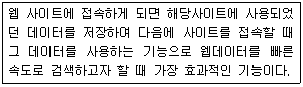
- 캐시기능
- 탭 브라우징
- SSL 보안설정
- 새로고침 기능
(정답률: 60%)
36. 다음 중 웹브라우저에서 제공하는 서비스와 그 주요 설명이 알맞게 짝지어진 것은?
- Usenet –원격지컴퓨터접속을제공하는서비스
- Telnet – 파일의 업로드/다운로드를 제공하는 서비스
- Gopher – 메뉴 방식의 인터넷 정보 검색 서비스
- FTP – 편지나 여러 정보를 주고받는 전자우편 서비스
(정답률: 52%)
37. 다음 중 프록시 서버에 대한 설명으로 알맞은 것은?
- 웹서버와 웹브라우저 사이에서 데이터를 중계해준다.
- 사용자가 가장 먼저 접속하는 종합정보제공 사이트이다.
- 홈페이지를 접속할 때 생성되는 정보를 담은 임시파일이다.
- 최신뉴스나 즐겨 찾는 블로그 등을 자동으로 업데이트 할 수 있다.
(정답률: 48%)
38. 다음 중 윈도우 기반 웹 브라우저에 해당하는 것은?
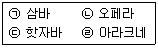
- ㉠
- ㉡, ㉢
- ㉡, ㉣
- ㉠, ㉢, ㉣
(정답률: 48%)
39. 다음 설명에 해당하는 웹 브라우저는?
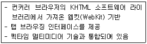
- 크롬
- 모자익
- 사파리
- 넷스케이프
(정답률: 34%)
40. 다음 그림은 익스플로러의 특정 기능에 관련된 연관 키워드이다. (가)에 알맞은 것은?
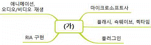
- 히스토리
- 실버라이트
- 스마트 스크린 필터
- InPrivate 브라우징
(정답률: 52%)
41. 다음에서 설명하는 인터넷 익스플로러의 기능은?
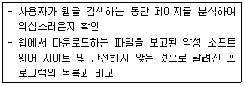
- InPrivate 브라우징
- ActiveX 필터링
- 팝업 차단
- SmartScreen 필터
(정답률: 61%)
42. 다음 중 익스플로러의 '가져오기 및 내보내기' 기능에 대한 설명으로 가장 거리가 먼 것은?
- 즐겨찾기에 있는 URL 주소를 내보낼 수 있다.
- 즐겨찾기를 다른 브라우저에서도 가져올 수 있다.
- 피드를 파일로 내보내기 할 경우, 기본적인 파일명은 feeds.htm 이다.
- 쿠키를 파일로 내보내기 할 경우, 기본적인 파일명은 cookies.txt 이다.
(정답률: 42%)
43. 다음 중 인터넷 익스플로러의 '검색 기록 삭제'에서 선택할 수 있는 항목으로 알맞은 것은?
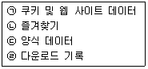
- ㉠
- ㉠, ㉢
- ㉡, ㉣
- ㉠, ㉢, ㉣
(정답률: 54%)
44. 다음 상황에 사용할 수 있는 구글 크롬의 기능은?
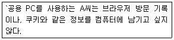
- 키 생성
- 백그라운드 동기화
- 시크릿 모드
- 자동 다운로드
(정답률: 74%)
45. 다음 중 인터넷 익스플로러의 SmartScreen 필터와 유사한 구글 크롬의 기능은?
- 애드센스
- 구글 킵
- 세이프 브라우징
- 행아웃
(정답률: 56%)
46. 다음 중 검색엔진에 대한 설명으로 알맞은 것을 모두 고른 것은?
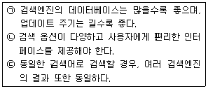
- ㉠
- ㉡
- ㉠, ㉢
- ㉡, ㉢
(정답률: 63%)
47. 다음 중 검색엔진의 구성요소가 아닌 것은?
- 검색엔진 소프트웨어
- 로봇
- 색인기
- 서버
(정답률: 52%)
48. 다음 설명 중, (가)에 들어갈 말로 알맞은 것은?
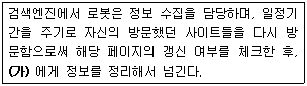
- 색인기(Indexer)
- 스쿠터(Scooter)
- 크롤러(Crawler)
- 방랑자(Wanderer)
(정답률: 57%)
49. 다음 중 검색엔진의 구성요소인 로봇이 주기적으로 방문하는 곳을 모두 고른 것은?
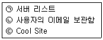
- ㉠
- ㉡
- ㉠, ㉢
- ㉠, ㉡, ㉢
(정답률: 63%)
50. 다음 중 로봇 배제 표준에 대한 설명으로 알맞은 것은?
- 로봇의 접근을 허용함으로써 서버의 부담을 줄여 인터넷 속도가 향상될 수 있다.
- robots.html 파일을 이용하여 로봇의 접근을 배제한다.
- 메타 태그의 'exclusive' 속성을 이용하는 방법도 있다.
- 로봇이 일으킬 수 있는 CGI 프로그램 소스의 파손, 시스템 다운, 트래픽 발생 등을 방지하기 위한 방법이다.
(정답률: 50%)
51. 다음은 robots.txt 파일의 내용이다. 이에 대한 설명으로 옳은 것은?
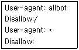
- 특정 검색 엔진(allbot)만 접근이 허용된다.
- allbot 은 홈페이지 전체 내용에 접근할 수 있다.
- allbot을 제외한 다른 검색엔진은 접근이 허용된다.
- 홈페이지 전체 내용을 모든 검색엔진에 노출을 허용한다.
(정답률: 43%)
52. 다음 중 메타 검색엔진을 가리키는 말을 모두 고른 것은?
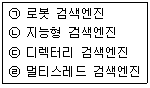
- ㉠, ㉡
- ㉠, ㉢
- ㉡, ㉣
- ㉢, ㉣
(정답률: 48%)
53. 다음 사례에 해당하는 용어로 적절한 것은?
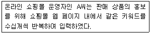
- 디버깅
- 스푸핑
- 크래킹
- 스패밍
(정답률: 52%)
54. 검색 결과의 평가 척도 중, 다음 사례에 해당하는 재현율과 정도율로 알맞은 것은?
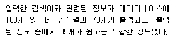
- 재현율 : 50%, 정도율 : 35%
- 재현율 : 70%, 정도율 : 35%
- 재현율 : 70%, 정도율 : 50%
- 재현율 : 1⑤%, 정도율 : 70%
(정답률: 58%)
55. 다음 중, '택소노미(Taxonomy)'에 대한 설명을 모두 고른 것은?
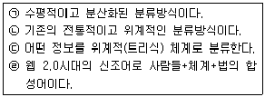
- ㉠, ㉡
- ㉠, ㉣
- ㉡, ㉢
- ㉢, ㉣
(정답률: 42%)
56. 다음 그림에 대한 설명으로 옳은 것은?
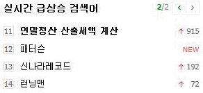
- 실시간 급상승 검색어 서비스는 최대 20위까지 확인이 가능하다.
- 검색어 우측의 숫자는 절대적인 검색횟수를 의미한다.
- 실시간 급상승 검색어 서비스는 현재 보이는 순위 외에 지난 순위 정보도 제공하고 있다.
- 모바일로는 실시간 급상승 검색어 서비스의 확인이 불가능하다.
(정답률: 63%)
57. 다음 중 구글 검색엔진에 대한 설명으로 옳은 것은?
- 검색어가 영어일 경우, 대소문자를 구별한다.
- 검색결과에서 특정 단어를 제외할 경우, 단어 뒤에 빼기 기호(-)를 입력한다.
- 모든 검색어에 대해 기본 값으로 AND 연산을 실행한다.
- Safe Search 기능을 통해 해킹 가능 콘텐츠를 차단한다.
(정답률: 45%)
58. 검색엔진의 정보검색 과정 중 '색인(Index)'에서 수행하는 작업에 해당되는 것은?
- 링크 추출, 암호화
- 중복 제거, DB 연계
- 형태소 분석, 사전 관리
- 질의어 분석·확장, 병렬 처리
(정답률: 39%)
59. 다음 중 효과적인 정보검색 방법에 해당하는 것을 모두 고른 것은?
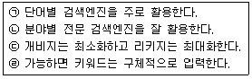
- ㉠, ㉡
- ㉠, ㉢
- ㉡, ㉣
- ㉢, ㉣
(정답률: 56%)
60. 다음 중 정보검색 개념에 대한 설명으로 거리가 먼 것은?
- 검색엔진을 통해 뉴스, 날씨, 이미지 등의 검색 및 자료를 다운로드 할 수 있다.
- 대량의 정보 중에서 필요한 정보를 신속하고 정확하게 찾아내는 것이 목적이다.
- 검색엔진을 이용하여 인터넷상에 존재하는 모든 정보를 찾을 수 있다.
- 시간의 경과에 따라 많은 사이트가 생겨나고 더불어 불필요한 쓰레기 정보도 증가하고 있다.
(정답률: 52%)
61. 다음 사례에 해당하는 검색 옵션으로 알맞은 것은?
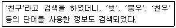
- 구문 검색
- 절단 검색
- 자연어 검색
- 시소러스 검색
(정답률: 56%)
62. 다음 사례에서 나타난 정보검색사의 역할로 가장 알맞은 것은?
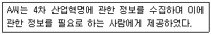
- 정보 분석가
- 정보 상담자
- 정보 중개인
- 정보의 균등 분배자
(정답률: 59%)
63. 다음 중 인터넷 정보원의 1차 정보에 해당되는 것은?
- 색인
- 해설 요약
- 초록지
- 표준과 규격자료
(정답률: 43%)
64. 다음 설명에 해당하는 학문적 관점에서의 정보에 대한 정의는?
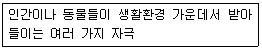
- 전통적 관점
- 자연주의적 관점
- 정보이론적 관점
- 행동과학적 관점
(정답률: 43%)
65. 다음 중 정보의 유형과 이에 따른 정보의 분류가 알맞게 짝지어진 것은?
- 효용성 : 형식정보, 의미정보
- 발생원 : 항상정보, 필요정보
- 정보원 : 1차 정보, 2차 정보, 3차 정보
- 이용 목적성 : 목적적 정보, 서비스재 정보
(정답률: 48%)
66. 다음은 정보원으로 데이터베이스를 선정 시, 어떤 요소에 해당되는가?
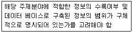
- 권위와 신뢰성
- 정확성
- 수록범위
- 완전성
(정답률: 46%)
3과목: 인터넷 윤리
67. 다음은 설명은 스피넬로가 제시한 인터넷 윤리의 4가지 규범 원리 중 어떠한 것에 해당되는가?
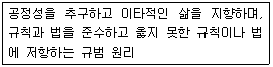
- 존중의 원리
- 책임의 원리
- 정의의 원리
- 해악금지의 원리
(정답률: 56%)
68. 다음 중 버지니아 셰어 교수가 제시한 네티켓의 핵심 원칙이 아닌 것은?
- 온라인 상의 자신을 근사하게 만들어라
- 실제 생활과 인터넷 상의 기준과 행동은 반드시 다르게 구분하라
- 다른 사람의 실수를 용서하라
- 논쟁은 절제된 감정아래 행하라
(정답률: 59%)
69. 다음 이메일 네티켓에 대한 설명 중 가장 거리가 먼 것은?
- 용량이 큰 메일은 압축하여 첨부한다.
- 전자우편 중 필요한 자료 이외에는 삭제한다.
- 전자메일을 받아보고 싶지 않은 사용자를 위해 수신 거부 기능을 제공한다.
- 광고성 메일의 경우, 제목에 '광고'라는 문구를 표기하지 않음으로써 광고의 효과성을 높인다.
(정답률: 68%)
70. 공개게시판을 이용하는 사용자로서 지켜야할 네티켓이 아닌 것은 무엇인가?
- 자신의 의견을 강조하기 위해서 같은 글을 여러 번 반복하여 올린다.
- 게시판의 글은 짧고 명확하게 쓰도록 한다.
- 게시물에 자신의 이름과 아이디, 전자우편 주소를 명시하고 글을 보기 좋게 편집한다.
- 제목에는 [부탁][요청] 등을 명시하여 읽는 사람이 보기 쉽도록 한다.
(정답률: 66%)
71. 다음 설명에 해당하는 전자금융사기의 유형은?
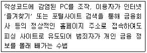
- 스미싱
- 비싱
- 파밍
- 메모리 해킹
(정답률: 59%)
72. 사이버 범죄의 가해자 및 피해자가 되지 않기 위해 준수해야할 것이 아닌 것은 무엇인가?
- 현실과 마찬가지로 상대방을 존중한다.
- 모든 메일은 반드시 예의를 갖춰 답장을 한다.
- 온라인 상의 논쟁이라도 절제 할 줄 알아야 한다.
- 자신의 관한 개인정보는 철저하게 관리한다.
(정답률: 59%)
73. 정보와 전염병의 합성어로 추측이나 뜬소문이 덧붙여진 부정확한 정보가 빠르게 전파됨으로써 개인의 사생활 침해 및 경제, 정치, 안보 등에 치명적인 영향을 미치는 것을 의미하는 용어는?
- 사이버 명예훼손
- 네카시즘
- 인포데믹스
- 사이버 불링
(정답률: 64%)
74. 제3자가 소비자의 결제 대금을 예치하고 있다가 통신판매자의 상품이 배송이 완료되면, 소비자의 확인을 거쳐서 통신판매업자에게 대금을 지급하는 제도는?
- 옵트-인 제도
- 옵트-아웃 제도
- 에스크로 제도
- 채무지급 보증제도
(정답률: 55%)
75. 다음 중 인터넷 중독을 일으키는 원인으로 가장 거리가 먼 것은?
- 현실 도피
- 높은 자아 존중감
- 비대면성
- 왜곡된 인지적 특성
(정답률: 73%)
76. 인터넷 중독의 증상 중, 동일한 수준의 쾌락을 얻기 위해서 더 많은 자극이 필요한 증상을 뜻하는 것은?
- 금단
- 내성
- 강박
- 집착
(정답률: 66%)
77. 다음 중 인터넷 중독을 예방하는 방법과 가장 거리가 먼 것은?
- 오프라인에서 친구들과 함께 대화하는 시간을 늘린다.
- 컴퓨터 사용시간을 가족과 협의한다.
- PC방에 갈 때 친구들과 함께 가기 보다는 가급적 혼자 간다.
- 컴퓨터 사용시간을 수시로 확인하며 조절 한다.
(정답률: 70%)
78. 인터넷 중독의 과정 중, 2단계인 대리 만족 단계에서 나타나는 현상은?
- 정기적으로 인터넷에 접속하며 친구들과 정보교류
- 가상세계의 환상에 사로잡혀 현실인식에 장애 발생
- 폭력성, 사행성, 음란성 등의 내재되어 있는 본성이 발휘
- 현실의 모든 질서를 부정하며, 오직 접속 상태만을 갈구
(정답률: 47%)
79. 다음 중 인터넷 중독증상의 분류가 다른 것은?
- 인터넷 사용을 조절하려는 욕구가 지속적으로 있지만 실패한다.
- 인터넷을 하지 않으면 불안하거나 우울하고 초초함을 느낀다.
- 인터넷 사용으로 잠을 자는 시간이 현저하게 줄어든다.
- 인터넷을 하느라 중요한 약속을 잊고 공부 및 직장 업무에 집중하지 못한다.
(정답률: 38%)
80. 다음 중 서울시로부터 외부기관이 위탁받아 인터넷, 스마트미디어 과다사용으로 어려움을 겪고 있는 아동·청소년에게 다양한 맞춤 상담 프로그램을 제공하는 기관의 명칭은?
- 인터넷중독대응센터
- 청소년미디어중독예방센터
- 서울시립청소년미디어센터
- 아이윌센터
(정답률: 54%)
인터넷에 대한 원칙과 통제 및 관리를 전문 기관에서 하는 이유는 인터넷이 전 세계적으로 연결되어 있기 때문에 국가 간의 협력과 규제가 필요하기 때문이다. 이를 위해 전 세계적으로 인터넷을 관리하는 기관인 ICANN이 존재한다. ICANN은 인터넷 도메인 이름과 IP 주소의 할당, 루트 네임 서버의 운영 등을 담당하고 있다.